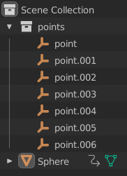
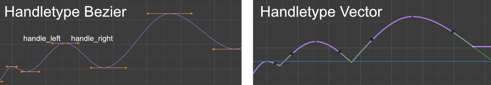
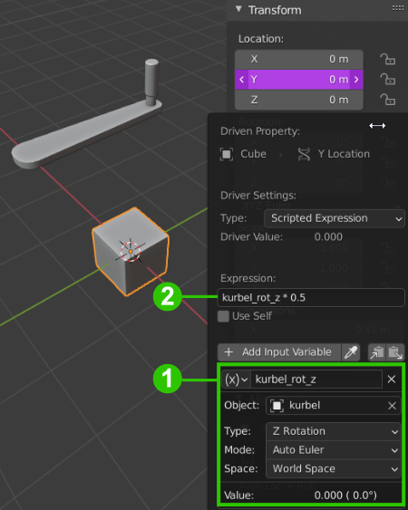
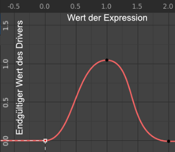
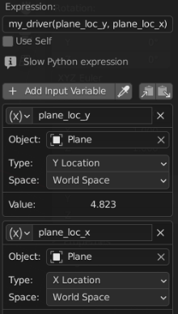

Übung 5 - Animation
Zur Generierung von Animationen stellt uns die Blender API verschiedene Möglichkeiten zur Verfügung. In folgender Übung werden wir uns die Wichtigsten hiervon ansehen.
- Keyframes
- Driver
- Scripted Expressions
- Custom Drivers
- App Handlers
Keyframes
Wir können die Blender API nutzen um per Script Keyframes zu setzen. Dafür wird die Methode keyframe_insert  verwendet. Diese kann zum Beispiel von Objekten aus aufgerufen werden. Deren wichtigste Parameter sind
verwendet. Diese kann zum Beispiel von Objekten aus aufgerufen werden. Deren wichtigste Parameter sind data_path (Pfad zum Wert, der verwendet werden soll) und frame (Framenummer des Keyframes).
Hier setzen wir beispielsweise auf unserem Würfel zunächst einen Location-Keyframe an Frame 0, verschieben den Würfel dann nach (0, 5, 0) und setzen dann einen Keyframe bei Frame 20.
import bpy
cube = bpy.data.objects['Cube']
cube.keyframe_insert(data_path="location", frame=1)
cube.location = (0, 5, 0)
cube.keyframe_insert(data_path="location", frame=20)
Schreibt ein Script, welches eine Kugel alle Objekte innerhalb einer Collection points abfliegen lässt. Es soll so aussehen, als spränge die Kugel von Punkt zu Punkt. Als Start kann diese Blender-Datei verwendet werden.

Vorgehen
Um zu beginnen suchen wir unsere benötigten Objekte und legen fest, wie lange die Kugel für die Strecke zwischen zwei Punkten brauchen soll:
1points = bpy.data.collections['points'].objects
2sphere = bpy.data.objects['Sphere']
3
4FRAMES_PER_POINT = 20
Nun iterieren wir über alle Objekte in points und setzen jeweils die Kugel an die Position des aktuellen Objekts. Dann setzen wir einen Keyframe an die Stelle FRAMES_PER_POINT * i
1for i in range(0, len(points)):
2 sphere.location = points[i].location
3 sphere.keyframe_insert(data_path="location", frame=FRAMES_PER_POINT * i)
- So fliegt der Ball nun schon zwischen den Punkten umher. Als nächstes soll er mit konstanter Geschwindgkeit fliegen - also muss der zeitliche Abstand des Keyframes an jedem Punkt jeweils abhängig von der Distanz zum letzten Punkt sein.
- Zuerst nutzen wir den Satz des Pythagoras, um die die Distanz zwischen zwei Punkten zu errechnen.
1def get_distance(p1, p2):
2 return math.sqrt((p1[0] - p2[0]) ** 2 + (p1[1] - p2[1]) ** 2 + (p1[2] - p2[2]) ** 2)
- Innerhal der Punkte-Schleife berechnen wir dann jeweils die Distanz zum vorherigen Punkt.
- Um uns eine If-Abfrage zu sparen, lagern wir den Keyframe für den ersten Punkt (der keinen vorherigen Punkt hat) aus.
- Zudem brauchen wir noch eine Variable
current_frame, an dessen Stelle der Keyframe gesetzt wird FRAMES_PER_POINThaben wir umbenannt inFRAMES_PER_UNIT, da diese nun mit der Distanz multipliziert wird, umcurrent_framezu berechnen
1sphere.location = points[0].location
2sphere.keyframe_insert(data_path="location", frame=1)
3
4current_frame = 1
5
6for i in range(1, len(points)):
7
8 sphere.location = points[i].location
9
10 distance_to_last_point = get_distance(points[i].location, points[i-1].location)
11 current_frame += distance_to_last_point * FRAMES_PER_UNIT
12
13 sphere.keyframe_insert(data_path="location", frame=current_frame)
14
- Nun wollen wir, dass der Ball Bögen zwischen den Punkten fliegt. Dazu müssen wir zwischen aufeinanderfolgenden Punkten den Punkt in deren Mitte berechnen und nach oben verschieben.
- Wie weit der Punkt nach oben versetzt wird, soll ebenfalls von der Distanz zum letzten Punkt und einer Variable
JUMP_HEIGHTabhängen.
1intermediate_point = (points[i-1].location + points[i].location) / 2
2intermediate_point.z += distance_to_last_point * JUMP_HEIGHT
Standardmäßig der Überganz zwischen Keyframes in Blender mit Bezierkurven interpoliert. Diese machen die Bewegungen sehr weich. Da wir den Ball jedoch hart von den Punkten abspringen lassen wollen, müssen wir den Interpolationstyp der Keyframes an den Punkten ändern.
 Vergleich der Handletypes - im Graph Editor sichtbar
- Wir loopen also über jede Animationskurve und ändern den Handletype jedes zweiten Keyframes (die Keyframes an denen der Ball oben ist lassen wir aus) zu VECTOR
- Danach muss die Funktion
...fcurvename.update()aufgerufen werden`
1for c_fcurve in sphere.animation_data.action.fcurves:
2 for i, c_keyframe in enumerate(c_fcurve.keyframe_points):
3 if i % 2 == 0:
4 c_keyframe.handle_left_type = "VECTOR"
5 c_keyframe.handle_right_type = "VECTOR"
6 c_fcurve.update()
Driver
Driver geben uns die Möglichkeit, Abhängigkeiten von Variablen verschiedener Objekte definieren. Fast jeder Variable in Blender kann mit RMB → Add Driver ein Driver hinzugefügt werden. Im Nun erscheinenden Fenster können dem Driver Input-Variablen anderer Objekte hinzugefügt werden, die dann in einer Expression verwendet werden können, die den Wert bestimmt, den unsere Variable erhalten soll.

In diesem Beispiel verwenden wir für die Y-Location unseres Würfels die Z-Rotation des Kurbel-Objekts und nennen sie kurbel_rot_z 1. In der Expression multiplizieren wir deren Wert dann mit 0.5 2. Nun können wir durch Rotation der Kurbel unseren Würfel kontrollieren.
Kurven
Zudem kann der Driver Editor geöffnet werden (Rechtsklick auf Variable). Hier kann zusätzlich die Kurve angepasst werden, anhand der unser Driver die Variablen miteinander verknüpft. Das Ergebnis der Expression wird hierbei mit dem Wert der Kurve am jeweiligen Punkt multipliziert.

In diesem Beispiel bedeutet das, dass der Würfel sich bis einer Rotation von 1 * 0.5 Radianten der Kurbel zum Punkt 1.0 auf der Y-Achse bewegt und sich dann wieder zurück auf 0 bewegt.
Custom Drivers
Um nun den Bogen zum Scripting zu schlagen, können wir auch Python-Funktionen als Driver definieren. Ein sehr einfaches Beispiel sieht folgendermaßen aus:
1import bpy
2
3def my_driver(val, v2):
4 """Returns the square of the given value"""
5 return v2 * v2
6
7bpy.app.driver_namespace['my_driver'] = my_driver
Zunächst definieren wir eine Funktion, welche beliebig viele Variablen entgegennimmt und einen Wert ausgibt. Dann fügen wir unsere Funktion dem driver_namespace hinzu. Nach Ausführung des Scripts können wir nun die Funktion my_driver in der Expression eines Drivers verwenden.

Custom Drivers sind zwar mächtig, sollten jedoch eher sparsam eingesetzt werden. Da in einer Animation die Funktion jeden Frame ausgeführt werden muss und Python recht langsam ist, kann die Performance hier schnell einbrechen.